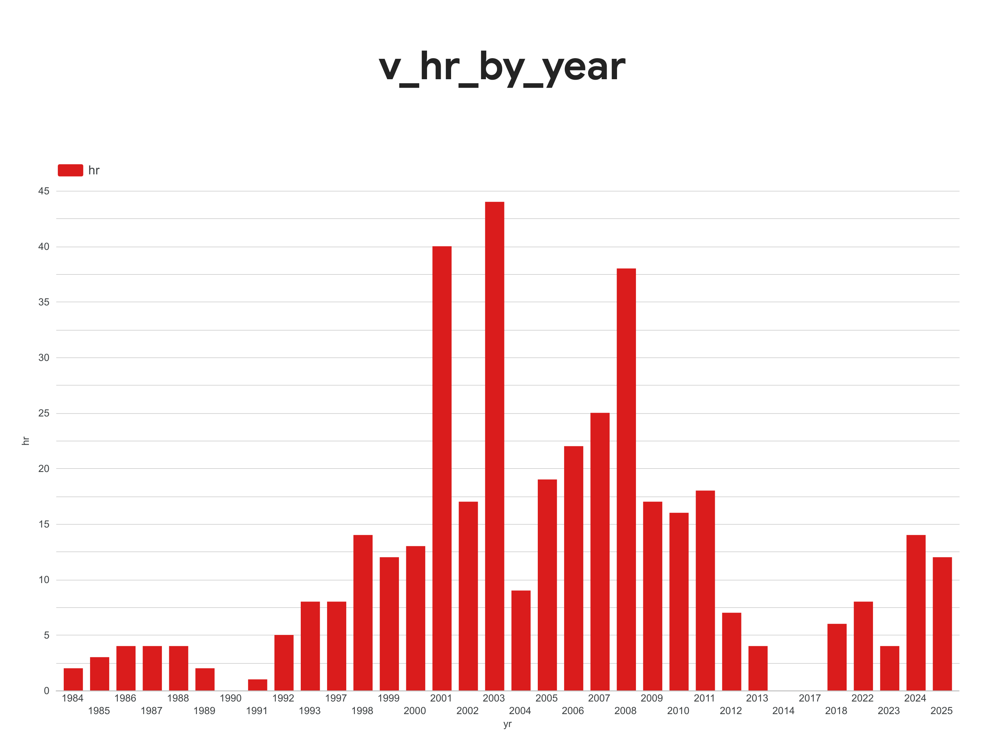

What is a home run?
Nobody buys a ticket for the sacrifice bunt. This is the sacrifice bunt. No chart. No agent. Just the definition everything else in the lineup leans on.
You know the calculated field. IF [Event Code] = 23 THEN 1 END, or whatever your shop called it, copied into the next workbook, drifting a little each time until two dashboards disagree and a VP asks which one is right. The 400 on the bar chart doesn't come from a calc. It comes from one definition, written once, in a place every tool has to read.
The game. Sunday, May 24, 1992. Brewers at Yankees. Poppa scored the first inning, then gave up and wrote the headlines at the bottom: “Yanks win 8-7 · Mattingly 3 doubles · Nokes + Hayes HRs · Nokes RBI winner.” Every one checks against the play-by-play. So does the part he didn't write down: tied in the ninth, Mattingly doubles, a groundout moves the runners up, and Nokes brings him home. The 2-hole's job, in the game's last inning.

The contract is live and browsable: every model, every test, the full lineage graph.
Here's the whole thing:
- name: home_runs_count
description: "Home runs Wax was in the building for. EVENT_CD 23, governed at last."
agg: sum
expr: case when event_code = 23 then 1 else 0 endThat's a home run. One file, and every engine in the lineup is measured against it.
Underneath it: 16 models. Seven staging views clean up Retrosheet, eight marts join and add meaning, and one calendar table feeds the metric engine. On top: five semantic models and nine metrics, seven of them the questions in the game notes.
A uniqueness test on Retrosheet's game id failed with 1,872 duplicates. That looked like a disaster for about ten minutes. Then it looked like the useful result: the public dataset includes Negro Leagues, exhibitions, and pre-MLB games for completeness, and some of them share ids with the modern schedule. My staging filter already kept only my 178, so nothing downstream was ever wrong.
The choice was about test granularity. Drop the test on the source I don't control, document the finding in the source's description, and keep the test where it applies, on the tables I do control. A test that fails and teaches you something about your source is doing its job. A test that fails on somebody else's data forever is noise.
Two smaller ones: an all-empty text column made dbt infer it as a number and broke a trim, fixed by pinning the type in the seed config. And the newest dbt engine turned out to have no local metric engine at all, so the metrics are queried through a side-by-side older install. Free, local, and in the same terminal as everything else.
Find a calculated field you've copied into three workbooks. Write it once, as a metric, somewhere every tool has to read it. Then delete the copies. That's the whole move.
Next, batting 3rd: Who am I? →